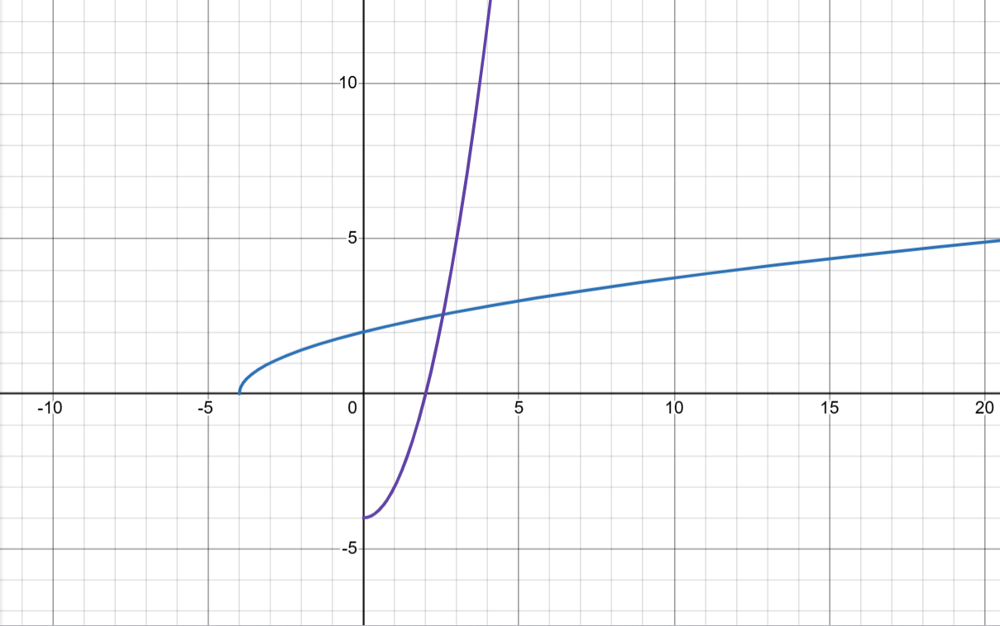

These funtions inverse funtions.

What is the sphere volume formula?
Find the value of x that fits the inequality
Is this function an even or odd function?
Rohan has a collection of Magic: The Gathering™ cards. Barry also has a collection of MTG™ cards. Rohan has 5 less than 10 times half the amount Barry has. Write an equation to show this, X being the number of cards Barry has, Y being the amount of cards Rohan has. If Barry has 30 cards, how many cards does Rohan have?